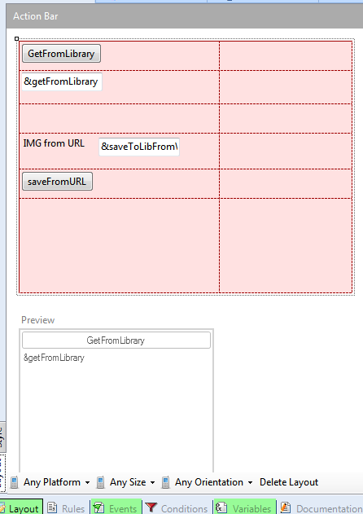
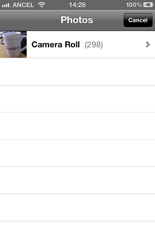
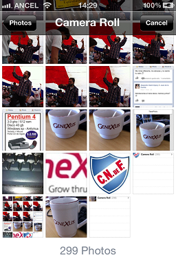
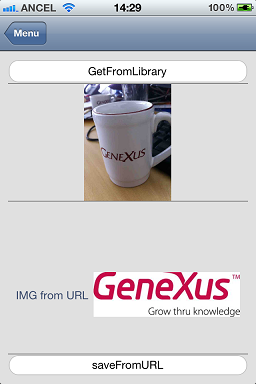

The PhotoLibrary external object enables you to interact with the photo gallery of the device.
As the HowTo: Using Camera external object in GeneXus for Smart Devices enables an app to interact with the photo camera of the device, this API allows the application to save or get an image or a video from the native photo gallery. This article focuses on what this API does and gives an example of how to use it in a Smart Device application.
Code Sample 1: Working with videos
Create the following Panel object
Event 'save'
photoLibrary.SaveVideo(&CompanyPresentationVideo)
Endevent
Event 'Choose'
&CompanyPresentationVideo = photolibrary.ChooseVideo()
Endevent
Variables: &CompanyPresentationVideo is based on Video data type.
There are three cases of different types of images for which the save method can be used.
- To save an image from the DB (attribute)
- To save an image from an URL (ImageVariable.FromURL(url))
- To save an image just taken with the camera (CameraAPI)
Create the following Panel object.

Event Refresh
&saveToLibFromWeb.FromURL('https://encrypted-tbn3.google.com/images?q=tbn:ANd9GcQ8n7HS90TxDvT4TcEphGN_AOxgwaOtUJ1rgM7f1puDi7851pcG1Q')
EndEvent
Event 'GetFromLibrary'
&getFromLibrary = PhotoLibrary.ChooseImage()
Endevent
Event 'saveFromURL'
PhotoLibrary.Save(&saveToLibFromWeb)
Endevent
&saveToLibFromWeb and &getFromLibrary are based on Image data type
When the ChooseImage method is invoked:
  
The Save method has no UI interaction to show, but the result of the execution is the image of the url saved on the device's photo gallery.
|